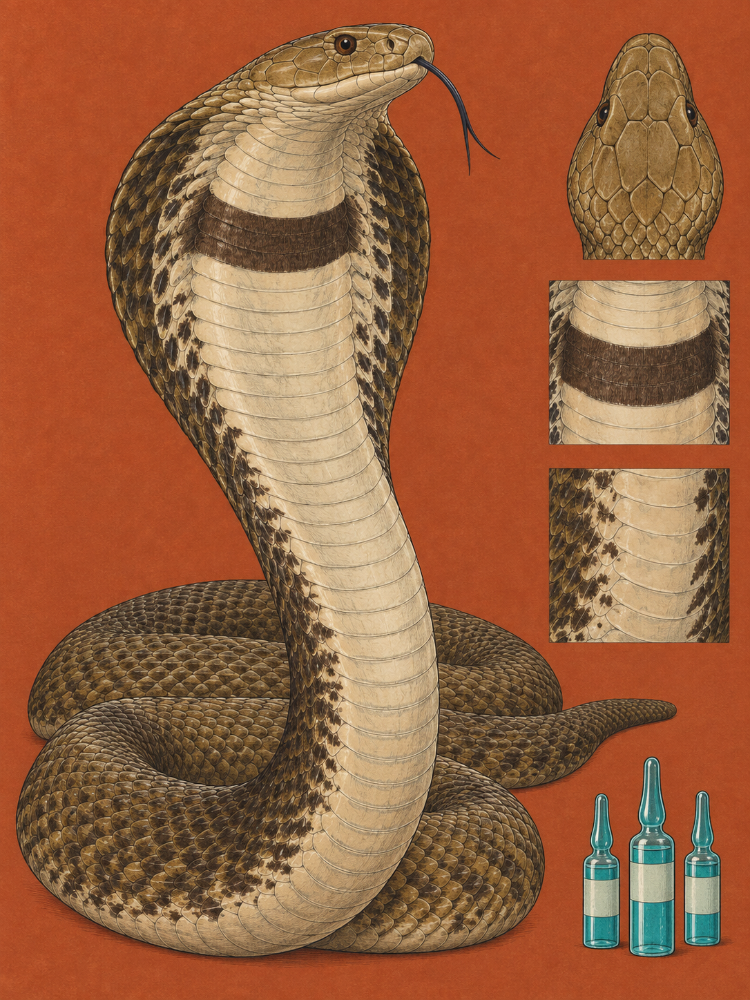

TSAVO / AMBOSELI
Naja ashei
Giriama: „Fira“; Embu: „Cuthu“; Luo (DhoLuo): „Rachir“; Luhya: „Ekhilakhima“; Taita (Kitaita): „Ilimajighu“; Samburu: „Lasurai“, „Lasuria“; Kikuyu: „Ndira“

Im staubigen Tsavo beantwortet eine braune Kobra den Blick eines Angreifers mit einem Sprühstoß. Die Ashe-Speikobra ist kräftig gebaut, mit einem breiten, herzförmigen Kopf und einem Körper von meist 1,3 bis 2,0 Metern Länge. An der kenianischen Küste sind Tiere über 2,0 Meter nicht ungewöhnlich, das dokumentierte Rekordmaß beträgt 2,7 Meter. Ihr Rücken kann grau, senfgelb oder olivbraun sein. Unter der Kehle liegt ein einziges, scharf begrenztes dunkelbraunes Band. Unter dieser Kehle fehlen rote, pinkfarbene und leuchtend orange Farben. Im trockenen Busch verschmilzt die Schlange mit Erde, Schatten und vertrocknetem Gras. Herpetologen unterscheiden sie von der Schwarzhals-Speikobra unter anderem an der Anordnung ihrer Schuppen. Im Verhältnis zum großen Kopf sind ihre Augen eher klein bis mittelgroß. Für einen Angreifer zählt am Ende ein anderes Detail: der Glanz seiner Augen.
Der Gattungsname Naja geht auf das Sanskritwort nāgá zurück, das „Schlange“ oder in einem bestimmten kulturellen Zusammenhang „Kobra“ bedeutet. Das Artepitheton ashei ehrt den Herpetologen James „Jimmy“ Ashe. Er wurde 1964 Kurator für Herpetologie am Nationalmuseum in Nairobi und gründete 1980 mit seiner Frau Sanda in Watamu die Bio-Ken Snake Farm. Schon in den 1960er Jahren vermutete Ashe, dass die große braune Kobra an Kenias Küste keine Farbvariante der Schwarzhals-Speikobra war. Im Englischen heißt sie auch „Ashe's spitting cobra“ oder „Giant spitting cobra“, auf Deutsch Ashe-Speikobra oder Riesenspeikobra. Ihr Name bewahrt eine Vermutung, die erst viel später als eigene Art anerkannt wurde.
Das Spucken ist kein Husten und kein Ausatmen. Die Giftzähne sitzen starr im vorderen Oberkiefer. Ihre Austrittsöffnungen liegen nicht an der Spitze, sondern vorn an der Seite. Starke Muskeln umschließen die großen Giftdrüsen im hinteren Teil des Schädels. Wenn sie sich reflexartig zusammenziehen, pressen sie das flüssige Gift durch feine Kanäle. So entsteht ein gezieltes Spritzen. Die Schlange richtet es instinktiv auf das Gesicht eines Angreifers und orientiert sich am Glanz der Augen. Die Flüssigkeit kann 1,2 bis 2,4 Meter weit reichen. Meist tritt sie als feiner Doppelstrahl aus, den schnelle Kopfbewegungen weiter zerstäuben. Fühlt sich die Schlange in die Enge getrieben, kann sie über Stunden wiederholt spritzen.
Im Jahr 2004 wurde ein Tier auf der Bio-Ken Snake Farm in Watamu gemolken, das später als Holotypus der Art diente. Bei einer einzigen Extraktion lieferte es 6,2 Milliliter flüssiges Gift und nach dem Trocknen fast 3 Gramm feste Toxine. Damit hielt die Art den dokumentierten Rekord für die höchste Giftausbeute unter den bekannten spuckenden Kobras. Die Gefahr liegt deshalb nicht nur in der Giftigkeit, sondern auch in der Menge. Bei einem Biss stehen in der Praxis Schäden an Haut und Gewebe im Vordergrund: Nekrosen, Blasen und starke Schwellungen. Trifft versprühtes Gift das Auge, wird die Hornhaut angegriffen. Sofortiges und ausgiebiges Spülen mit Wasser oder einer sterilen Lösung ist nötig, sonst drohen dauerhafte Schäden und Erblindung.
Ein artspezifisches Antiserum gibt es nicht. Präklinische Studien der University of Nairobi aus dem Jahr 2022 prüften deshalb drei in Kenia verfügbare Gegengifte. Inoserp und das polyvalente Serum des South African Institute of Medical Research zeigten eine hohe Neutralisationspotenz. Das indische Vins-Präparat wirkte gegen die giftbedingte Letalität unzureichend. Die medizinische Antwort muss also zur Art und zur Giftmenge passen. Die Ashe-Speikobra ist nicht wegen eines einzigen geheimnisvollen Stoffes gefährlich, sondern weil ihr Abwehrsystem viel Gift an einen bestimmten Ort bringen kann.
In Tsavo Ost, Tsavo West und Amboseli lebt sie in trockenen Tiefebenen und Savannen. Ihr nachgewiesenes Verbreitungsgebiet reicht außerdem nach Somalia, Äthiopien und Uganda. Ende September ist die lange Trockenzeit fast vorbei. Roter Lateritboden, grauer Staub und spärliche Vegetation bestimmen die Umgebung. Die Schlangen ziehen sich in Risse trockener Flussbetten, Säugetierbaue oder verlassene Termitenhügel zurück. Sobald im Oktober die ersten Niederschläge einsetzen, kommen Frösche aus ihrer Übersommerung, und die Aktivität der Kobras nimmt zu. Sie fressen Frösche, Nagetiere und Echsen, auch andere Schlangen gehören zur Beute. Dokumentiert wurde eine Kobra, die einen etwa 60 Zentimeter langen Waran erbeutete. Berichte erzählen von einer Ashe-Speikobra, die eine rund 1,5 Meter lange Puffotter durch die Savanne zog und verschlang. Am frühen Morgen kann sie sich sonnen, bevor sie sich vor der Mittagshitze zurückzieht. Trotz ihrer Größe ist sie vorwiegend nachtaktiv.
Jahrzehntelang hielt die Wissenschaft die großen braunen Speikobras Ostafrikas für eine abweichend gefärbte Form von Naja nigricollis. James Ashe widersprach, doch seine Beobachtungen fanden ohne genetische Belege wenig Gehör. Erst Wolfgang Wüster und Donald G. Broadley beschrieben die Art 2007 in der Zeitschrift Zootaxa. Sie untersuchten mitochondriale DNA und fanden eine eigenständige Abstammungslinie. Überraschenderweise ist die Ashe-Speikobra näher mit der Mosambik-Speikobra Naja mossambica verwandt als mit der Schwarzhals-Speikobra. Das Tier war also schon lange verschieden, bevor die Systematik es aussprach. In Watamu wurde seine Geschichte sichtbar, im Labor wurde sie lesbar.
Wenn im Tsavo der Staub über den Boden zieht, bleibt die Kobra darin fast unsichtbar. Nur das dunkle Halsband hebt sich kurz vom Olivbraun ab. Dann richtet sich der Kopf, und im Gesicht des Gegenübers fängt ein kleiner Glanz das Licht.
Die Ashe-Speikobra lebt nahe an einer Landschaft, in der Felder und Siedlungen in ehemalige Buschhabitate wachsen. Shambas ziehen Nagetiere an, und diese locken die Schlange in die Nähe menschlicher Häuser. Bei Begegnungen werden Schlangen deshalb oft sofort getötet. In Watamu entstand ein Gegenbild: James und Sanda Ashe gründeten 1980 die Bio-Ken Snake Farm. Die Einrichtung wurde Zufluchtsort für verletzte Reptilien und Zentrum für Schlangenbisshilfe.
Als Menschen bemerkten, dass dort Antivenin bereitlag, brachten sie Bissopfer zur Farm. Das Ehepaar organisierte Spenden, damit Krankenhäuser an der Küste, darunter das District Hospital in Malindi, Gegengifte und Beratung erhielten. Nach James Ashes Tod führte Royjan Taylor die Arbeit fort und gründete den James Ashe Antivenom Trust. Die Stiftung sammelt weltweit Gelder, um Antivenine zu importieren und medizinische Schulungen zu finanzieren. Die Farm entfernt Giftschlangen aus Häusern und setzt sie außerhalb von Siedlungen wieder aus. Dazu kommen Notfallschulungen für medizinisches Personal und öffentliche Aufklärung. So schützt sie Menschen und Schlangen zugleich.
Wo und wann: In Tsavo West oder Amboseli suche Ende September bis Oktober nur aus sicherer Entfernung an Termitenhügeln, Rissen trockener Flussbetten und schattigen Buschrändern. Die Schlange kann 1,2 bis 2,4 Meter weit spritzen, deshalb mindestens 3 bis 4 Meter Abstand halten und niemals den Weg versperren.
Brennweite: 150 bis 600 mm, damit die Kobra aus sicherer Distanz formatfüllend bleibt. Eine geschlossene Schutzbrille gehört zur Ausrüstung, besonders wenn du durch den Sucher blickst.
Bild-Idee: Halte die aufgerichtete Kobra mit olivbraunem Kopf, hellem Nackenschild und dem einzelnen dunkelbraunen Halsband gegen den roten Tsavo-Boden fest. Ein feiner Doppelstrahl darf die Abwehr zeigen, ohne die Schlange näher heranzuholen.